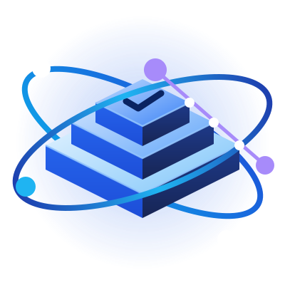

OPEN SOURCE · v0.1.0
OPEN SOURCE · v0.1.0
El vibe coding no escala.
La spec sí.
Libero astromesh-sdd: 7 skills de Spec-Driven Development para que tu agente de código piense antes de escribir, y lo demuestre al terminar.
Claude CodeCodexOpenCodeKimiGeminiCopilot
El problema
Tu agente escribe rápido.
Y se olvida del porqué.
La sesión se cierra, el contexto se va, y la próxima arranca de cero. Lo que decidiste quedó en un chat que nadie va a releer.
PROMPT Y REZAR
- El agente adivina lo que no le dijiste
- Las decisiones viven en el chat
- "Listo" sin una prueba que corra
SPEC-DRIVEN
- Lo que no sabe, lo pregunta o lo marca
- Cada fase es un archivo en tu repo
- "Listo" = evidencia de esta sesión
El ciclo
Primero qué. Después cómo.
Al final, la prueba.
1
Specifyrequisitos numerados, testeables
spec.mdaprobás ↓
2
Plandecisiones y lo que se descartó
plan.mdaprobás ↓
3
Taskscada tarea con su comando de prueba
tasks.mdaprobás ↓
4
Implementuna tarea a la vez, test primero
commits↓
5
Verifycada requisito contra su evidencia
verify.md
Prueba real
Le pedí una línea.
Me devolvió 5 preguntas.
> agregá slugify(title): minúsculas, ASCII, guiones, máx. 5 palabras
¿La ß se translitera a ss o se descarta?
¿don't queda dont o se parte en dos?
¿Un símbolo suelto como & cuenta como palabra?
Preguntas que yo no me había hecho. Cada respuesta se volvió un requisito con su ejemplo, y cada ejemplo, un test.
Trazabilidad
"Funciona" no es
un veredicto.
REQUISITOTAREAEVIDENCIA
REQ-2T-1"Café Ñandú" → "cafe-nandu"✓
REQ-4T-2"C++ & Rust" → "c-rust"✓
REQ-7T-3"?!... --- ___" → ""✓
Un requisito que nadie cita no se construye.
Una tarea que no cita nada es scope creep.
Un ✓ sin evidencia de esta sesión no existe.
Lo que aprendí
Lo que no te cuenta
ningún tutorial.
La aprobación tiene que vivir en el archivo.
La primera versión la dejaba en el chat. Una sesión nueva encontraba la spec y planificaba sin que nadie la hubiera aprobado. Ahora cada gate escribe Status: approved.
Si lo dejás, el agente planifica alrededor de una duda.
Con dos preguntas abiertas y un "aprobado", siguió adelante y aisló lo indefinido. Razonable, pero por eso el plan exige cerrar las dudas primero.
Un revisor independiente encontró 8 problemas.
Antes de lanzar. Cada uno se arregló con un test que primero falló. Lo mismo que le pido al agente.
APACHE-2.0
Un formato abierto.
Cualquier agente.
Skills en formato Agent Skills (SKILL.md): la misma carpeta sirve para todos.
Claude Codeplugin
Codex CLI.agents/skills
OpenCode.agents/skills
Kimi Code.agents/skills
Gemini CLI.agents/skills
Copilot.agents/skills
¿Tu equipo trabaja distinto? Reglas, plantillas y fases propias en .sdd/, sin tocar las skills.
Instalalo hoygithub.com/monaccode/astromesh-sdd